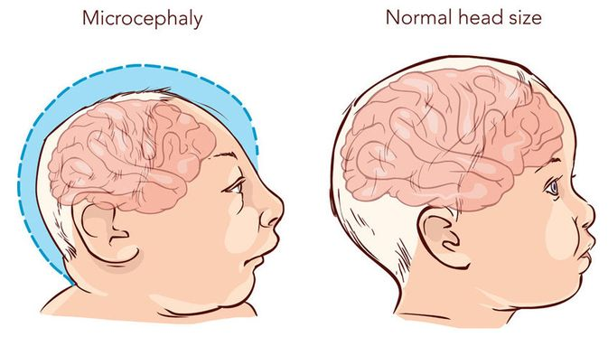

Want To Know More ?
Go Explore !!
 Virus Zika adalah virus yang penyebarannya terjadi melalui perantara gigitan nyamuk, terutama spesies Aedes aegypti. Jenis nyamuk ini adalah jenis nyamuk yang sama dengan nyamuk penyebar virus dengue, chikungunya, dan demam kuning. Virus Zika menyebabkan penyakit Zika (Zika disease) atau demam Zika (Zika fever).
Virus Zika adalah virus yang penyebarannya terjadi melalui perantara gigitan nyamuk, terutama spesies Aedes aegypti. Jenis nyamuk ini adalah jenis nyamuk yang sama dengan nyamuk penyebar virus dengue, chikungunya, dan demam kuning. Virus Zika menyebabkan penyakit Zika (Zika disease) atau demam Zika (Zika fever).
Penularan
error_outlinesangat disarankan wanita hamil tidak bepergian ke negara-negara di mana Virus Zika aktif !!!

Infeksi zika selama kehamilan dapat menyebabkan cacat lahir pada otak yang disebut mikrosefali dan cacat otak parah lainnya. Ini juga terkait dengan masalah lain, seperti keguguran, lahir mati, dan cacat lahir lainnya. Ada juga peningkatan laporan sindrom Guillain-Barré, penyakit yang tidak biasa pada sistem saraf, di daerah yang terkena dampak Zika


About Us
 Work as :
Work as :
- Ketua
Work as :
- Wakil Ketua
 Work as :
Work as :
- Designer
- Programmer.
Work as :
- Content Mgr
 Work as :
Work as :
- Content Mgr
Work as :
- Content Mgr
Powered by w3.css